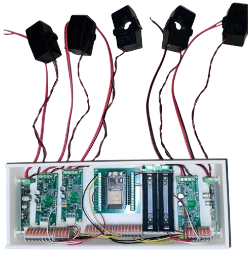
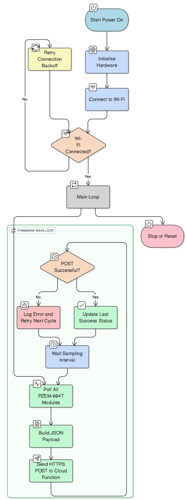
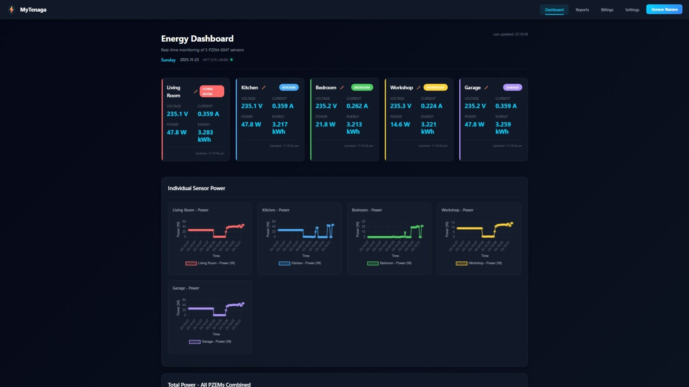
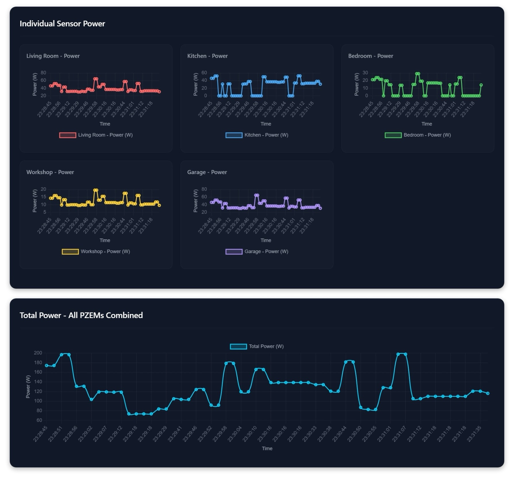
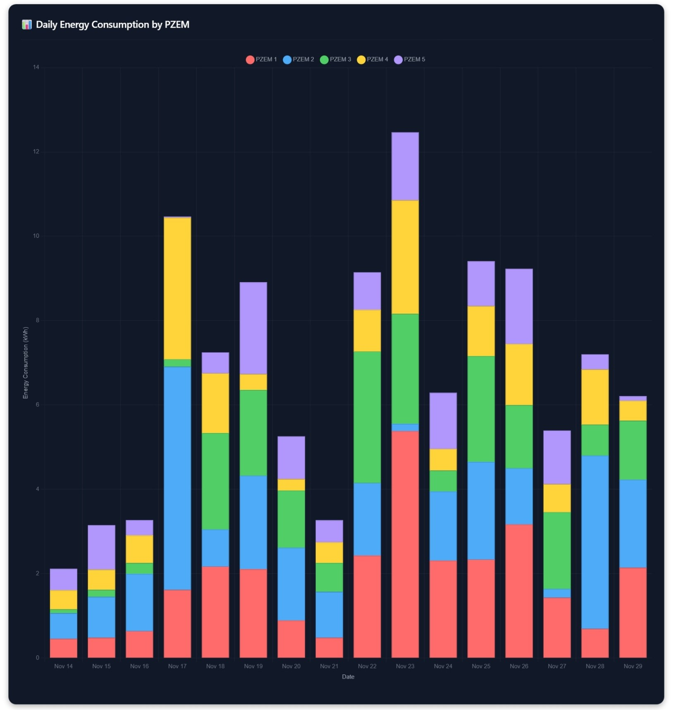
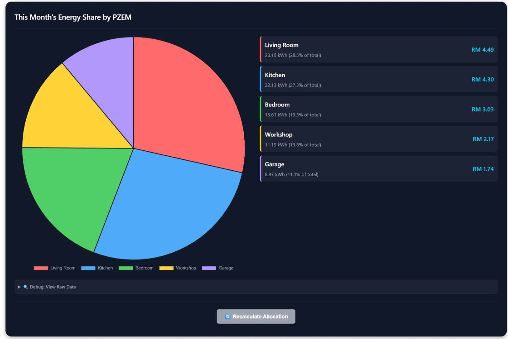
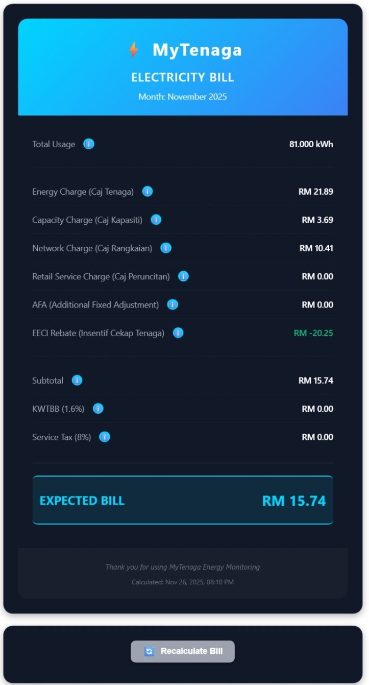
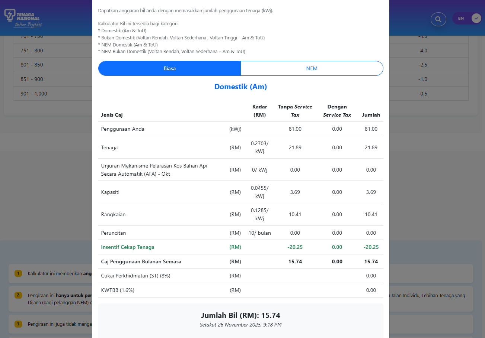
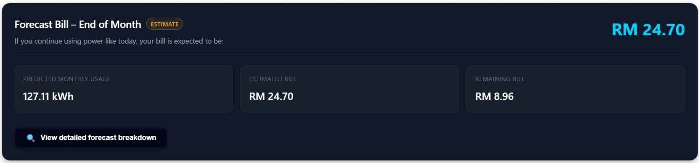
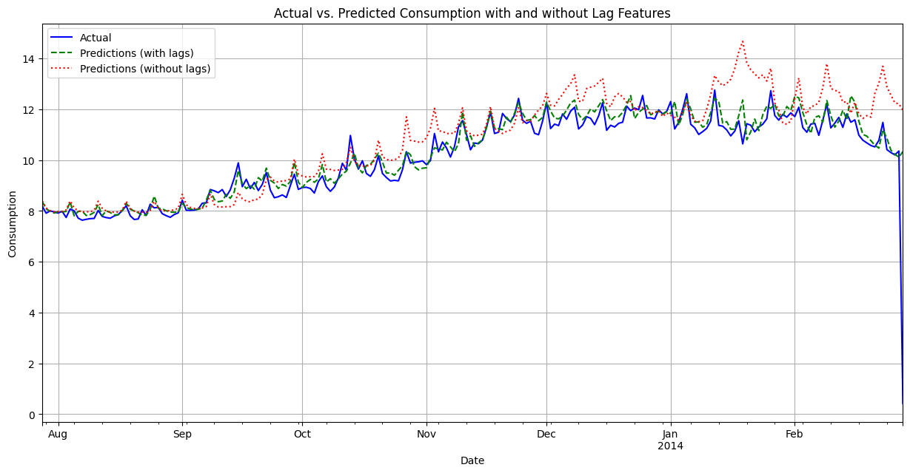

Project Information
- Duration: May 2025 - December 2025
- Location: Malaysia
- Tech: ESP32, PZEM-004T, Firebase, Cloud Functions, XGBoost, TypeScript, JavaScript
- GitHub:
- Technical Paper:
- Full Report:
- ML Model Development (Colab):
- Live Website:
MyTenaga – Turning the Home DB into a Smart Energy Dashboard
For most people, the electricity bill is just a number that appears once a month. You see RM something, you sigh a bit, and you pay it. But you don't really know:
- Which room is actually eating the most energy?
- How much are the air-conds really costing every month?
- If I keep using electricity like this, what will my next bill look like?
That question bothered me enough that I turned it into my final year project. I wanted something more than a cool circuit or a one-off prototype. I wanted a system that could sit in an actual home and answer those questions in real time, using proper tariff logic and a bit of machine learning on top.
That's how MyTenaga was born – a smart IoT-based energy monitoring system that lives at the distribution board (DB) and behaves like your own personal myTNB, but with way more detail and control.
The Big Idea
The vision for MyTenaga was simple to describe, but not so simple to build:
- See what each DB circuit is using – not just total house kWh
- Translate that usage into a proper TNB bill breakdown
- Predict where the bill is likely heading before the month ends
- Wrap everything in a clean, interactive web dashboard that normal people (not just engineers) can understand
I also challenged myself to:
- Use low-cost, off-the-shelf hardware
- Keep it realistic for a Malaysian home (single-phase DB, TNB tariff)
- Use cloud services + ML in a way that feels meaningful, not overkill

Instrumenting the Distribution Board
Most consumer energy gadgets are either:
- Whole-house smart meters (one reading only), or
- Plug-level smart sockets (fine for a few devices, but not scalable)
I wanted something in between: circuit-level monitoring at the DB.
To do that, I used several PZEM-004T energy meter modules. Each PZEM is wired to the outgoing side of a specific MCB, for example:
- Living Room
- Bedroom
- Kitchen
- Air-cond
- Spare / future circuit
Each module measures:
- Voltage
- Current
- Active power
- Energy (kWh)
All the PZEMs are mounted together in a custom 3D-printed enclosure near the DB. High-voltage wiring stays enclosed and safe, while the low-voltage communication pins are routed out to the controller.

This layout keeps the protective function of the MCBs intact but lets the system see exactly how much each part of the house is using.
ESP32 + UPS: A Tiny Always-On Gateway
To tie all the PZEMs together and push the data to the cloud, I used an ESP32.
Its job is to:
- Poll each PZEM over UART
- Read the voltage, current, power, and energy values
- Timestamp everything
- Package the data as JSON
- Send it securely to the cloud over Wi-Fi
I didn't want a fragile breadboard living near a DB, so I built the controller on proper connections for:
- ESP32 module
- PZEM communication lines
- Power rails
- Connectors to the UPS
For power, I used a small Samirob UPS module with two 18650 lithium-ion cells. It outputs a regulated 5V supply and has a USB-C charging port. More importantly, when the mains drops for a moment, the ESP32 keeps running without rebooting – which means:
- No data gaps
- No dashboard suddenly going "offline" during a short brownout


This little board essentially becomes the gateway between the DB and the cloud.
Cloud Backend: Firebase as the Nerve Center
On the cloud side, I built the backend around Firebase.
The flow looks like this:
- The ESP32 sends JSON payloads to a Cloud Function endpoint via HTTPS
- The function validates and normalizes the data
- Latest readings are stored in Firebase Realtime Database (for live display)
- Time-series logs and aggregated data are stored in Cloud Firestore
Then a second layer of Cloud Functions kicks in:
- Scheduled functions compute daily and monthly kWh per circuit
- A billing function implements the July 2025 TNB Domestic Tariff
- Another function checks usage vs thresholds and triggers email alerts
The billing function doesn't just do a flat "kWh × rate". It actually breaks the bill into:
- Energy charge
- Capacity charge
- Network charge
- Retail service charge
- AFA (Automatic Fuel Adjustment)
- Energy Efficiency Incentive (rebates in certain bands)
- KWTBB surcharge
- Service tax (where applicable)
All of this is recalculated automatically every day based on the actual measured kWh. So instead of guessing or doing manual Excel, the user gets:
"If your billing period ended today, your bill would be about RM X, with Y% from your air-cond circuit."
The Dashboard: A Personal myTNB for Your Own DB
To make this usable, I built a web dashboard hosted on Firebase Hosting, using:
- HTML, CSS, JavaScript
- Firebase SDKs for live data
- Chart.js for charts and graphs

The dashboard has several key views:
1. Real-Time Circuit Cards
Each monitored circuit appears as a "card" showing:
- Circuit name (e.g. Living Room, Kitchen)
- Voltage, current, power, energy (kWh)
- Last updated time
You can literally flip a switch in the house and watch the power change on the corresponding card within seconds.
2. Historical Charts
For each circuit and for the whole home, you can see:
- Daily kWh for the month
- Which days were unusually high
- How different circuits compare over time
I also added stacked bar and pie charts to show which circuit is dominating the bill.



3. Billing and Forecast Panel
This is where it gets really interesting:
- Current month bill so far (RM)
- Breakdown of each tariff component
- Per-circuit contribution to the total bill
- Forecasted end-of-month usage and bill (from the ML model – more on that next)



The goal is for a non-technical user to be able to say:
"Okay, so far I'm at RM X this month, and the kitchen + air-conds are 70% of it."
Teaching the System to Look Ahead: XGBoost Forecasting
Real-time monitoring is great, but I also wanted MyTenaga to answer:
"If I continue like this, where will my bill land by the end of the month?"
For that, I added a machine learning component. The entire model development process was done in a Google Colab notebook, which allowed me to experiment, iterate, and document the process.
Model Development in Google Colab
Since I didn't yet have months of local site data, I started with a public residential energy dataset and built an XGBoost regression model around it. The Colab notebook contains the complete workflow:
- Data Loading & Exploration: Imported and analyzed the residential energy consumption dataset to understand patterns and seasonality
- Feature Engineering: Created a comprehensive feature set including:
- Calendar features: Day of week, day of year, month, quarter, year, workday vs weekend flag
- Lag features: Energy usage from the previous 1–9 days (these capture short-term consumption patterns)
- Model Training: Trained multiple XGBoost models with different configurations to find the best hyperparameters
- Hyperparameter Tuning: Used techniques like grid search and cross-validation to optimize model performance
- Model Evaluation: Compared baseline models (without lag features) against the enhanced model with lag features, measuring performance using MAE (Mean Absolute Error), MSE (Mean Squared Error), and MAPE (Mean Absolute Percentage Error)
- Model Export: Saved the trained model and hyperparameters for deployment
Those lag features turned out to be very powerful. Compared to a baseline XGBoost model without them, the lag-based model significantly reduced prediction error. The lag features capture the temporal dependencies in energy consumption – how yesterday's usage influences today's usage, and so on.

The Colab notebook also includes visualizations showing:
- Training vs validation loss curves
- Feature importance plots (showing which features the model relies on most)
- Prediction vs actual comparisons
- Error distribution analysis
From Notebook to Production
Once trained and validated in Colab, I exported the model files (the trained XGBoost model and hyperparameters JSON) and deployed them as a Python Cloud Function on Google Cloud. In production, the flow is:
- Aggregated daily kWh values are prepared in Firestore
- Cloud Function retrieves the recent sequence of daily consumption
- Feature engineering pipeline creates the same features used during training (calendar + lag features)
- The XGBoost model predicts the next day's consumption
- This prediction is chained iteratively to forecast until the end of the month
- The forecasted total monthly kWh is fed back into the TNB billing logic
The dashboard then shows:
- "Forecast energy: XXX kWh"
- "Forecast bill: around RM YYY"
It's not meant to be a perfect prediction, but it's enough to warn users early if they're on track for a higher-than-usual bill. The model adapts to recent consumption patterns, so if someone suddenly starts using more energy (like turning on air-conds more frequently), the forecast will reflect that trend.
.jpeg)
You can view the complete model development process, including all the code, visualizations, and analysis, in the Google Colab notebook.
Smart Alerts: When the System Talks to You
Since all data and forecasts live in the cloud, adding alerts was straightforward.
Users can define:
- A monthly target (e.g. RM 250)
- A warning threshold (e.g. 70% of target)
- A critical threshold (e.g. 90% of target)
Cloud Functions periodically check:
- Actual usage so far
- Forecasted end-of-month usage
When a threshold is crossed, the system sends an email with:
- Current usage and current bill
- Forecasted bill if behavior continues
- Per-circuit usage contribution (for critical alerts)
So the system doesn't just show you graphs; it actually taps you on the shoulder and says:
"Hey, if you keep this up, your bill might hit RM 3XX. You may want to reduce air-cond usage or shift some loads."
Closing Thoughts
MyTenaga started as a way to answer a simple question: "Why is my electricity bill so high?" But building it taught me that the real challenge wasn't just the hardware or the code – it was making something that could actually sit in a real home and provide genuine value.
The system uses off-the-shelf components, real cloud infrastructure, and a bit of machine learning to turn raw sensor data into actionable insights. More importantly, it does it in a way that's accessible to anyone, not just engineers.
Whether it's seeing which circuit is drawing too much power, understanding how the TNB tariff actually works, or getting a heads-up before the monthly bill arrives, MyTenaga puts the power of energy awareness directly in the homeowner's hands.
Project Resources
- Code & GitHub Repository:
- ML Model Development (Google Colab):
- Technical Paper (PDF):
- Full Report (PDF):